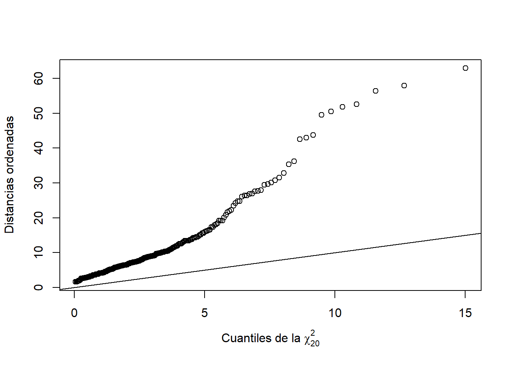
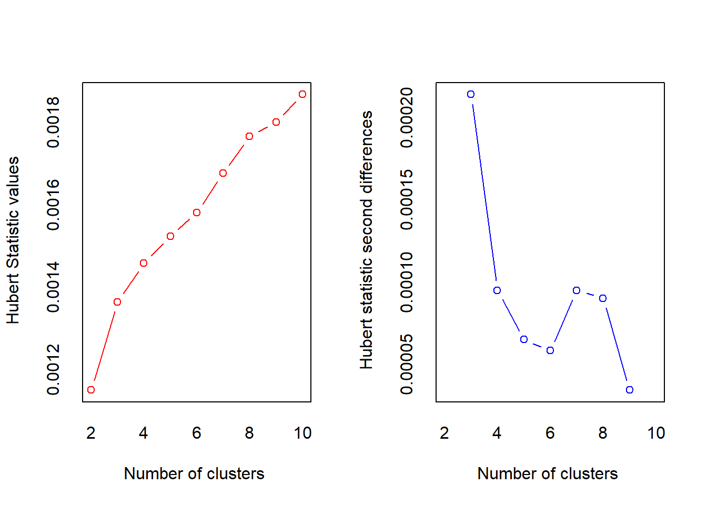
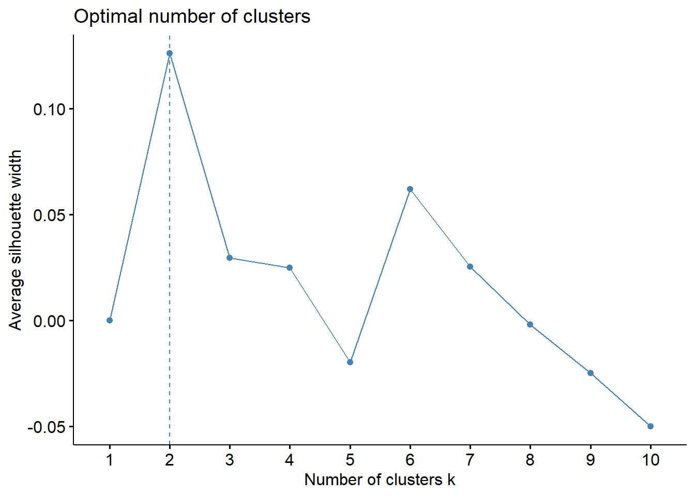
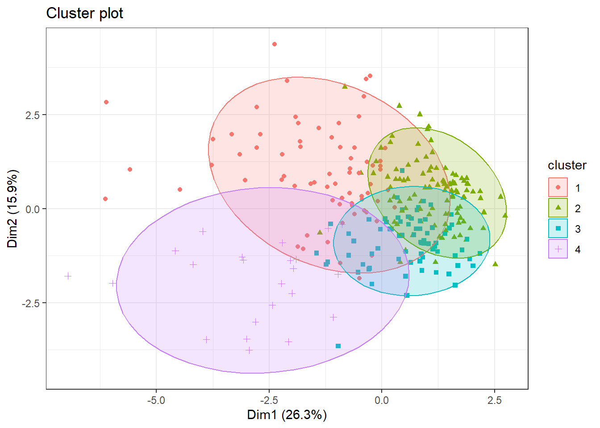
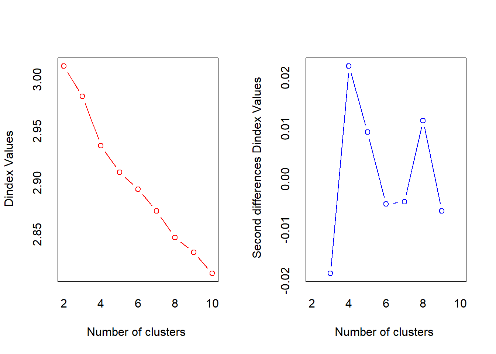
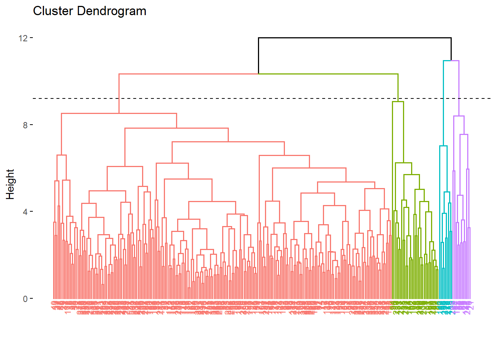
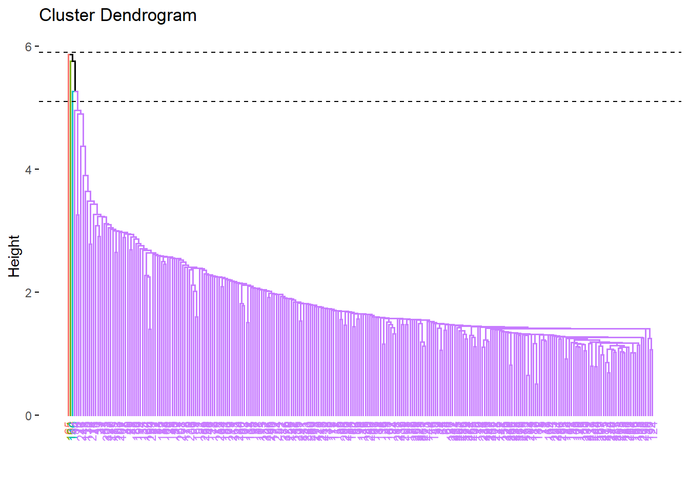

library(tidyverse)
library(dplyr)
library(GGally)
library(psych)
library(skimr)
library(fmsb)
library(mvnormtest)
library(car)
library(nortest)
library(fBasics)
library(ggplot2)
library(factoextra)
library(stats)
library(cluster)
library(NbClust)
library(ggrepel)Clustering
Recordatorio
Vamos a tratar una base de datos relacionados con la predicción de riesgo de cirrosis. La cirrosis es una etapa tardía de la cicatrización (fibrosis) del hígado causada por muchas formas de enfermedades y afecciones hepáticas, como la hepatitis y el alcoholismo crónico.
Nuestro objetivo para este estudio sería estudiar algunos perfiles con riesgo de padecer cirrosis.
Los datos provienen de la página web Kaggle: Kaggle - Cirrhosis.
Recordemos nuestra tabla de datos:
datos <- read.table("cirrosis_tidy.csv", header = TRUE )
datos = datos %>% mutate(Ascites = Ascites %>% as.factor,
Hepatomegaly = Hepatomegaly %>% as.factor,
Spiders = Spiders %>% as.factor,
Edema = Edema %>% as.factor,
Stage = Stage %>% as.factor,
Drug = Drug %>% as.factor,
Sex = Sex %>% as.factor,
Status = Status %>% as.factor)
glimpse(datos)Rows: 276
Columns: 20
$ ID <int> 1, 2, 3, 4, 5, 7, 8, 9, 10, 11, 12, 13, 15, 16, 17, 18, …
$ N_Days <int> 400, 4500, 1012, 1925, 1504, 1832, 2466, 2400, 51, 3762,…
$ Status <fct> Muerto, Cens, Muerto, Muerto, Cens_Trat, Cens, Muerto, M…
$ Drug <fct> D-penicillamine, D-penicillamine, D-penicillamine, D-pen…
$ Age <int> 21464, 20617, 25594, 19994, 13918, 20284, 19379, 15526, …
$ Sex <fct> Female, Female, Male, Female, Female, Female, Female, Fe…
$ Ascites <fct> Si, No, No, No, No, No, No, No, Si, No, No, No, No, No, …
$ Hepatomegaly <fct> Si, Si, No, Si, Si, Si, No, No, No, Si, No, No, No, No, …
$ Spiders <fct> Si, Si, No, Si, Si, No, No, Si, Si, Si, Si, No, No, No, …
$ Edema <fct> Si, No, Sin, Sin, No, No, No, No, Si, No, No, No, No, No…
$ Bilirubin <dbl> 14.5, 1.1, 1.4, 1.8, 3.4, 1.0, 0.3, 3.2, 12.6, 1.4, 3.6,…
$ Cholesterol <int> 261, 302, 176, 244, 279, 322, 280, 562, 200, 259, 236, 2…
$ Albumin <dbl> 2.60, 4.14, 3.48, 2.54, 3.53, 4.09, 4.00, 3.08, 2.74, 4.…
$ Copper <int> 156, 54, 210, 64, 143, 52, 52, 79, 140, 46, 94, 40, 173,…
$ Alk_Phos <dbl> 1718.0, 7394.8, 516.0, 6121.8, 671.0, 824.0, 4651.2, 227…
$ SGOT <dbl> 137.95, 113.52, 96.10, 60.63, 113.15, 60.45, 28.38, 144.…
$ Tryglicerides <int> 172, 88, 55, 92, 72, 213, 189, 88, 143, 79, 95, 130, 96,…
$ Platelets <int> 190, 221, 151, 183, 136, 204, 373, 251, 302, 258, 71, 24…
$ Prothrombin <dbl> 12.2, 10.6, 12.0, 10.3, 10.9, 9.7, 11.0, 11.0, 11.5, 12.…
$ Stage <fct> 4, 3, 4, 4, 3, 3, 3, 2, 4, 4, 4, 3, 3, 3, 4, 4, 3, 4, 4,…El tibble resultante consta de 276 observaciones y 20 variables. Cada muestra representa un paciente al que se le ha extraido la siguiente información:
ID: Identificador únicoN_Days: Número de días entre el registro y la fecha de defunción, transplante o estudio analítico en Julio de 1986.Status: Estatus del paciente: C (Censurado), CL (censurado debido a tratamiento hepático), o D (Muerto)Drug: Tipo de fármaco: D-penicilamina o placeboAge: Edad [días]Sex: Sexo cromosómico: Male (hombre) o Female (Mujer)Ascites: Presencia de Ascitis: No o SiHepatomegaly: Presencia de Hepatomegalia: No o SiSpiders: Presencia de arañas vasculares: No o SiEdema: Presencia de Edema: No (no hay edema y sin tratamiento diurético para el edema), Sin (presencia de edema sin diuréticos, o edema curado con diuréticos), o Si (edema a pesar del tratamiento con diuréticos)Bilirubin: Bilirrubina sérica [mg/dl]Cholesterol: Colesterol sérico [mg/dl]Albumin: Albúmina [g/dl]Copper: Cobre en orina [ug/day]Alk_Phos: Fosfatasa alcalina [U/liter]SGOT: SGOT [U/ml]Triglycerides: Triglicéridos [mg/dl]Platelets: Plaquetas por cúbico [ml/1000]Prothrombin: Tiempo de Protrombina [s]Stage: Estado histórico de la enfermedad (1, 2, 3, or 4)
Resumen numérico de las variables
- Datos cuantitativos:
Unidad Media Desv Minimo Maximo Rango
N_Days Días 1979.167 1112.380 41.00 4556.00 4515.00
Age Días 18189.326 3843.556 9598.00 28650.00 19052.00
Bilirubin mg/dl 3.334 4.601 0.30 28.00 27.70
Cholesterol mg/dl 371.261 234.788 120.00 1775.00 1655.00
Albumin g/dl 3.517 0.405 1.96 4.40 2.44
Copper ug/día 100.768 88.269 4.00 588.00 584.00
Alk_Phos U/l 1996.612 2115.478 289.00 13862.40 13573.40
SGOT U/ml 124.119 56.720 28.38 457.25 428.87
Tryglicerides mg/dl 124.978 65.281 33.00 598.00 565.00
Platelets ml/1000 261.772 93.129 62.00 563.00 501.00
Prothrombin s 10.736 1.008 9.00 17.10 8.10- Datos cualitativos:
Status Drug Sex Ascites Hepatomegaly
Cens :147 D-penicillamine:136 Female:242 No:257 No:134
Cens_Trat: 18 Placebo :140 Male : 34 Si: 19 Si:142
Muerto :111
Spiders Edema Stage
No:196 No :234 1: 12
Si: 80 Si : 17 2: 59
Sin: 25 3:111
4: 94 Análisis de normalidad multivariante
Con estos datos vamos a realizar nuestro estudio de normalidad multivariante.
Calculemos el vector de medias
y la distancia de Mahalanobis:
d_Mahalanobis = apply(datos_quant, MARGIN = 1, function(x)
t(x - Medias)%*%solve(S)%*%(x - Medias))Una vez calculadas estas medidas, representemos los datos

Notemos que no sigue una Chi-cuadrado, i por tanto los datos tampoco siguen una normal multivariante.
Vamos a realizar un test de normalidad para confirmarlo. Utilizaremos Shapiro-Wilk:
mvnormtest::mshapiro.test(t(datos_quant))
Shapiro-Wilk normality test
data: Z
W = 0.83366, p-value < 2.2e-16Obtenemos un p-valor muy pequeño, prácticamente 0, entonces, rechazamos la hipótesis nula y concluimos que no hay normalidad multivariante, es decir, almenos una variable individual no se distribuye normalmente.
Clustering
Vamos a guardar en un nuevo dataset las variables cuantitativas. Vamos a tipificar o escalar nuestros datos para que esten todos a la misma escala:
datos2 <- datos_quant %>% scale()A continuación, realicemos una representación gráfica de matrices de distancia:
Primero de todo vamos a centrar la matriz de datos:
n <- dim(datos2)[1]
X <- as.matrix(datos2)
Hn <- diag(n)-1/n # matriz de centrado
cX <- Hn%*%X # matriz centradamat_dist <- dist(x = cX, method = "euclidean")fviz_dist(dist.obj = mat_dist, lab_size = 5) +
theme(legend.position = "none")
K-means
En nuestro caso, no sabemos en cuantos clusters o grupos esta dividido nuestro dataset. Por tanto, vamos a estimar al número \(k\) óptimo para aplicar el método de kmeans(). Para ello, utilizaremos la función fviz_nbclust():
fviz_nbclust(x = cX, FUNcluster = kmeans, method = "wss",
diss = dist(cX, method = "euclidean"))
Realmente, con el método del codo, es un poco complicado establemcer un \(k\) óptimo, así que vamos a utilizar otros métodos que nos proporciona R:
fviz_nbclust(x = cX, FUNcluster = kmeans, method = "silhouette")
fviz_nbclust(x = cX, FUNcluster = kmeans, method = "gap_stat")
Con el método de la silueta, nos sugiere escoger \(k=2\), en cambio, con el siguiente, nos sugiere 8 clusters. Como no hemos salido de dudas, vamos a realizar otro experimento: vamos a realizar una función que nos proporciona 30 índices para determinar el número de clusters.
resnumclust = NbClust(data = cX, distance = "euclidean", min.nc = 2, max.nc = 10,
method = "kmeans", index = "alllong")
*** : The Hubert index is a graphical method of determining the number of clusters.
In the plot of Hubert index, we seek a significant knee that corresponds to a
significant increase of the value of the measure i.e the significant peak in Hubert
index second differences plot.

*** : The D index is a graphical method of determining the number of clusters.
In the plot of D index, we seek a significant knee (the significant peak in Dindex
second differences plot) that corresponds to a significant increase of the value of
the measure.
*******************************************************************
* Among all indices:
* 8 proposed 2 as the best number of clusters
* 1 proposed 3 as the best number of clusters
* 10 proposed 4 as the best number of clusters
* 1 proposed 7 as the best number of clusters
* 1 proposed 8 as the best number of clusters
* 3 proposed 9 as the best number of clusters
* 3 proposed 10 as the best number of clusters
***** Conclusion *****
* According to the majority rule, the best number of clusters is 4
******************************************************************* fviz_nbclust(resnumclust)Among all indices:
===================
* 2 proposed 0 as the best number of clusters
* 1 proposed 1 as the best number of clusters
* 8 proposed 2 as the best number of clusters
* 1 proposed 3 as the best number of clusters
* 10 proposed 4 as the best number of clusters
* 1 proposed 7 as the best number of clusters
* 1 proposed 8 as the best number of clusters
* 3 proposed 9 as the best number of clusters
* 3 proposed 10 as the best number of clusters
Conclusion
=========================
* According to the majority rule, the best number of clusters is 4 .
Vamos a calcular las 4 k-medias con nuestros datos y con 30 iteraciones. Además, vamos a visualizar como ha quedado la partición.
#set.seed(2312)
km_clusters <- kmeans(x = cX, centers = 4, nstart = 30)
km_clusters$cluster [1] 1 4 1 1 2 2 2 2 1 2 1 2 4 2 1 3 2 1 2 1 3 4 2 3 3 3 4 1 4 4 1 2 4 2 1 2 4
[38] 4 2 4 2 4 2 2 4 4 4 4 4 4 2 2 1 3 1 2 2 2 2 3 2 2 2 3 3 3 1 1 2 1 3 2 1 2
[75] 2 3 2 2 2 2 1 1 2 1 1 2 2 1 2 2 1 2 2 1 2 2 2 2 1 1 2 2 2 3 2 2 3 1 2 2 2
[112] 2 3 1 2 2 2 2 2 2 3 1 2 2 2 2 3 2 1 3 1 2 1 2 1 2 3 2 2 2 2 2 1 2 1 3 2 2
[149] 2 2 2 2 2 2 2 2 2 3 2 1 3 1 2 3 2 3 2 2 1 2 2 2 2 2 2 2 2 2 1 2 2 2 2 2 3
[186] 3 2 1 2 1 1 2 2 2 1 2 1 2 1 2 1 2 3 2 1 1 2 3 1 1 3 2 2 3 2 2 2 2 1 1 2 2
[223] 2 2 2 1 1 2 2 1 2 2 1 1 1 2 2 2 2 2 2 2 2 2 2 3 2 2 2 2 2 1 2 1 2 2 2 1 3
[260] 2 2 1 2 2 2 2 1 2 4 2 2 2 1 1 2 3Ahora bien, representemos dichos clusters en el plano. Como nuestro número de variables (dimensionalidad) es mayor de 2, automáticamente realiza un PCA y representa las dos primeras componentes principales (Dim1 y Dim2).
fviz_cluster(object = km_clusters, data = cX, show.clust.cent = TRUE, geom ="point",
ellipse.type = "euclid", star.plot = TRUE, repel = TRUE, palette = c("#FF7078", "#F39B4C", "#7FBFF5", "#A298E8")) +
theme_bw() +
theme(legend.position = "none")Como podemos ver, al menos en la proyección en 2 dimensiones, hay bastante solapamiento. Además, si vemos la zona pintada como si fuera un intervalo de confianza, hay muchas observaciones que quedan fuera.
Dendograma
Visualicemos un dendograma para ver estas particiones en los datos.
res = hcut(cX, k=4, stand = TRUE)
fviz_dend(res, rect = TRUE, cex = 0.5, k_colors = c("#FF7078", "#F39B4C", "#7FBFF5", "#A298E8"))Warning: The `<scale>` argument of `guides()` cannot be `FALSE`. Use "none" instead as
of ggplot2 3.3.4.
ℹ The deprecated feature was likely used in the factoextra package.
Please report the issue at <https://github.com/kassambara/factoextra/issues>.
Ahora bien, sería interesante ver si estos clusters corresponden a las fases de cirrosis segun la variable stage.
Vamos a crear un data frame compuesto de 3 columnas: identificador del paciente, estado de la enfermedad y cluster al que pertenece.
id_stage = datos %>%
select(ID, Stage)
Cluster = km_clusters$cluster %>% as.factor()
tabla_cluster = cbind(id_stage, Cluster)
tabla_cluster ID Stage Cluster
1 1 4 1
2 2 3 4
3 3 4 1
4 4 4 1
5 5 3 2
6 7 3 2
7 8 3 2
8 9 2 2
9 10 4 1
10 11 4 2
11 12 4 1
12 13 3 2
13 15 3 4
14 16 3 2
15 17 4 1
16 18 4 3
17 19 3 2
18 20 4 1
19 21 4 2
20 22 4 1
21 23 4 3
22 24 2 4
23 25 2 2
24 26 3 3
25 27 4 3
26 28 4 3
27 29 2 4
28 30 4 1
29 31 2 4
30 32 4 4
31 33 3 1
32 34 2 2
33 35 3 4
34 36 2 2
35 37 4 1
36 38 4 2
37 39 4 4
38 43 2 4
39 44 3 2
40 46 3 4
41 47 3 2
42 48 3 4
43 50 4 2
44 51 2 2
45 52 1 4
46 54 4 4
47 55 3 4
48 56 2 4
49 57 3 4
50 59 3 4
51 60 3 2
52 61 1 2
53 62 4 1
54 63 3 3
55 64 3 1
56 65 1 2
57 66 3 2
58 67 3 2
59 68 3 2
60 69 3 3
61 71 4 2
62 72 3 2
63 73 1 2
64 74 4 3
65 75 4 3
66 76 4 3
67 77 3 1
68 78 4 1
69 79 3 2
70 80 4 1
71 81 4 3
72 82 3 2
73 83 4 1
74 84 3 2
75 85 4 2
76 86 3 3
77 87 3 2
78 88 3 2
79 89 2 2
80 90 2 2
81 91 4 1
82 92 4 1
83 93 2 2
84 94 4 1
85 97 3 1
86 98 1 2
87 99 2 2
88 100 4 1
89 101 3 2
90 102 1 2
91 103 4 1
92 104 2 2
93 105 3 2
94 107 1 1
95 108 2 2
96 109 3 2
97 110 3 2
98 111 3 2
99 112 4 1
100 113 4 1
101 114 3 2
102 115 3 2
103 116 3 2
104 117 4 3
105 118 3 2
106 119 3 2
107 120 3 3
108 121 4 1
109 122 3 2
110 124 4 2
111 125 4 2
112 127 2 2
113 130 3 3
114 131 4 1
115 132 3 2
116 133 4 2
117 134 2 2
118 135 2 2
119 136 2 2
120 137 2 2
121 138 3 3
122 139 4 1
123 140 3 2
124 141 2 2
125 142 2 2
126 143 4 2
127 144 3 3
128 145 3 2
129 147 2 1
130 148 3 3
131 149 4 1
132 151 2 2
133 152 3 1
134 153 1 2
135 154 3 1
136 155 4 2
137 156 2 3
138 157 2 2
139 158 2 2
140 159 3 2
141 160 3 2
142 161 2 2
143 162 4 1
144 163 3 2
145 165 4 1
146 166 2 3
147 167 4 2
148 169 3 2
149 170 3 2
150 172 3 2
151 173 2 2
152 175 3 2
153 177 2 2
154 179 4 2
155 180 3 2
156 181 4 2
157 183 2 2
158 184 3 3
159 185 3 2
160 186 3 1
161 187 3 3
162 188 4 1
163 189 3 2
164 191 4 3
165 192 4 2
166 193 4 3
167 194 2 2
168 195 4 2
169 196 4 1
170 197 2 2
171 198 2 2
172 199 3 2
173 200 3 2
174 201 4 2
175 202 2 2
176 203 2 2
177 204 3 2
178 206 1 2
179 208 4 1
180 209 2 2
181 210 2 2
182 212 3 2
183 213 3 2
184 214 3 2
185 215 3 3
186 217 4 3
187 219 3 2
188 220 2 1
189 221 4 2
190 222 3 1
191 223 4 1
192 224 3 2
193 225 2 2
194 226 3 2
195 227 2 1
196 228 3 2
197 229 4 1
198 230 4 2
199 231 4 1
200 232 3 2
201 233 4 1
202 234 2 2
203 235 3 3
204 236 3 2
205 237 3 1
206 239 4 1
207 240 3 2
208 241 4 3
209 242 3 1
210 243 4 1
211 244 3 3
212 245 3 2
213 246 4 2
214 247 3 3
215 248 3 2
216 249 4 2
217 250 4 2
218 251 2 2
219 252 4 1
220 253 4 1
221 254 3 2
222 255 3 2
223 256 3 2
224 257 2 2
225 258 1 2
226 259 3 1
227 260 4 1
228 262 3 2
229 263 4 2
230 264 3 1
231 265 4 2
232 266 3 2
233 267 4 1
234 268 4 1
235 269 2 1
236 270 3 2
237 271 3 2
238 272 1 2
239 273 3 2
240 275 4 2
241 276 2 2
242 277 3 2
243 278 4 2
244 279 2 2
245 280 3 2
246 281 4 3
247 282 4 2
248 283 4 2
249 284 3 2
250 285 1 2
251 286 3 2
252 287 4 1
253 288 2 2
254 289 2 1
255 290 3 2
256 291 4 2
257 292 3 2
258 293 4 1
259 294 4 3
260 295 3 2
261 296 4 2
262 297 4 1
263 298 3 2
264 299 3 2
265 301 4 2
266 302 2 2
267 303 4 1
268 304 3 2
269 305 3 4
270 306 2 2
271 307 2 2
272 308 2 2
273 309 2 1
274 310 2 1
275 311 2 2
276 312 2 3table(x = tabla_cluster[,c(2,3)]) Cluster
Stage 1 2 3 4
1 1 10 0 1
2 7 44 3 5
3 12 75 15 9
4 45 31 15 3FATAL
K-medoids (PAM)
En este caso, cada cluster está representado por una observación presente en el cluster (medoid), mientras que en K-means cada cluster está representado por su centroide, que se corresponde con el promedio de todas las observaciones del cluster pero con ninguna en particular. Vamos a utilizar la distancia de Manhattaan ya que es menos sensible a outliers.
fviz_nbclust(x = cX, FUNcluster = pam, method = "wss",
diss = dist(datos, method = "manhattan"))
Encontramos codos en \(k=2\), \(k=4\) y uno muy pronunciado en \(k=6\). Para ver cual sería óptimo, como en el caso anterior, visualicemos otros métodos como el de la silueta i gap_stat.
fviz_nbclust(x = cX, FUNcluster = pam, method = "silhouette",
diss = dist(datos, method = "manhattan"))
fviz_nbclust(x = cX, FUNcluster = pam, method = "gap_stat",
diss = dist(datos, method = "manhattan"))
Estos dos métodos nos sugieren 2 clusters para realizar el análisis. Como en kmeans, podemos utilizar la misma función para corroborarlo con 30 índices, utilizando el método median, que es el más indicado para medoides:
resnumclust2 = NbClust(data = cX, distance = "euclidean", min.nc = 2, max.nc = 10,
method = "median", index = "alllong")Warning in pf(beale, pp, df2): NaNs produced
*** : The Hubert index is a graphical method of determining the number of clusters.
In the plot of Hubert index, we seek a significant knee that corresponds to a
significant increase of the value of the measure i.e the significant peak in Hubert
index second differences plot.

*** : The D index is a graphical method of determining the number of clusters.
In the plot of D index, we seek a significant knee (the significant peak in Dindex
second differences plot) that corresponds to a significant increase of the value of
the measure.
*******************************************************************
* Among all indices:
* 11 proposed 2 as the best number of clusters
* 4 proposed 3 as the best number of clusters
* 8 proposed 4 as the best number of clusters
* 1 proposed 5 as the best number of clusters
* 2 proposed 8 as the best number of clusters
* 2 proposed 10 as the best number of clusters
***** Conclusion *****
* According to the majority rule, the best number of clusters is 2
******************************************************************* fviz_nbclust(resnumclust2)Esta función nos sugiere escoger 2 clusters. De este modo, calculamos los clusters y los representamos.
pam_clusters <- pam(x = cX, k = 2, metric = "manhattan")
fviz_cluster(object = pam_clusters, data = cX, ellipse.type = "t", geom = "point",
repel =TRUE) +
theme_bw() +
theme(legend.position = "none")
Estan bastante solapados, puede deberse a la proyección a dos dimensiones.
Dendograma
Visualicemos un dendograma que nos ayude a observar la clasificación:
hc_completo <- datos_quant %>% scale() %>% dist(method = "euclidean") %>%
hclust(method = "complete")
fviz_dend(x = hc_completo, k = 2, cex = 0.6) +
geom_hline(yintercept = 11.2, linetype = "dashed")
fviz_dend(x = hc_completo, k = 4, cex = 0.6) +
geom_hline(yintercept = 9.2, linetype = "dashed")
Hay un cluster mucho más grande que el otro. Podríamos mirar si se corresponde con algun factor, y poder definir algunos perfiles.
Clara
Análisis de Componentes Principales
Calculamos las componentes principales con el comando prcomp utilizando nuestro dataset, sin escalar los datos ya que están todos en la misma escala. Por último, los consideramos centrados en el 0.
datos.acp=prcomp(cX, scale = FALSE, center = FALSE)Los valores propios muestran el porcentaje de varianza explicada por cada componente principal.
eigenvalue variance.percent cumulative.variance.percent
Dim.1 2.88813 26.25575 26.25575
Dim.2 1.74439 15.85808 42.11383
Dim.3 1.12545 10.23139 52.34522
Dim.4 0.96744 8.79488 61.14010
Dim.5 0.84138 7.64895 68.78905
Dim.6 0.79369 7.21540 76.00445
Dim.7 0.70646 6.42232 82.42677
Dim.8 0.63293 5.75392 88.18069
Dim.9 0.52599 4.78173 92.96242
Dim.10 0.44467 4.04246 97.00489
Dim.11 0.32946 2.99511 100.00000
Efectivamente, viendo el gráfico y utilizando el criterio del codo, nos quedaremos con
Realicemos un gráfico de círculo de correlación variable para ver como se agrupan las variables y la calidad de representación que tienen.

Para corroborar numéricamente la calidad de representación, realizaremos un gráfico de cos2.

Efectivamente, las tres primeras variables tienen un cos2 alto, por tanto estas bien representadas. En cambio, las otras variables tienen un valor de cos2 prácticamente nulo, indica que estas variables no estan bien representadas por las componentes principales.
Para ver como se relacionan las componentes principales con los datos originales, veamos los autovectores.
PC1 PC2 PC3 PC4 PC5 PC6 PC7 PC8
N_Days 0.3585 -0.2066 0.3548 -0.3215 0.1701 -0.0608 -0.3194 -0.1849
Age -0.1023 0.4465 0.3694 0.3263 -0.0856 -0.3350 -0.1371 -0.6278
Bilirubin -0.4919 -0.0652 -0.0314 0.0376 0.2631 -0.0897 -0.0298 0.0646
Cholesterol -0.2640 -0.4403 -0.1601 0.0287 0.0302 -0.5081 -0.1715 0.0064
Albumin 0.3257 -0.2734 0.0163 -0.0258 0.6241 0.1591 0.0965 -0.3464
Copper -0.3962 0.0226 0.0765 -0.0310 0.0709 0.5439 0.4044 -0.3027
Alk_Phos -0.1544 -0.2527 0.6300 -0.3329 -0.4022 0.1715 -0.0787 0.1060
SGOT -0.3326 -0.2131 -0.2808 -0.4654 -0.0933 -0.1105 -0.0343 -0.4727
Tryglicerides -0.3010 -0.2445 0.2039 0.4710 0.2455 0.2849 -0.4856 0.1146
Platelets 0.0885 -0.4649 0.2610 0.3669 -0.1115 -0.2738 0.6140 -0.0259
Prothrombin -0.2311 0.3154 0.3459 -0.3199 0.5059 -0.3145 0.2363 0.3275
PC9 PC10 PC11
N_Days 0.3073 -0.5201 -0.2563
Age -0.1057 0.0597 -0.0023
Bilirubin 0.0365 0.1514 -0.8030
Cholesterol -0.5095 -0.3555 0.1884
Albumin -0.3539 0.3845 0.0325
Copper -0.1441 -0.5055 0.0577
Alk_Phos -0.3117 0.3139 -0.0196
SGOT 0.4271 0.2648 0.2246
Tryglicerides 0.2999 0.0618 0.3194
Platelets 0.3272 0.0278 -0.0202
Prothrombin 0.1044 -0.0015 0.3104Observemos que la primera componente principal da un peso muy elevado y negativo a la variable Bilirubin.
Respecto a la segunda componente principal, representa sobretodo a Platelets, a Age y a Cholesterol.
Ahora, vamos a realizar un biplot, que nos permitirá visualizar las variables originales y las observaciones transformadas en los ejes de componentes principales.
Resultados del Análisis
Llegado a este punto, vamos a comprobar numéricamente todas las conclusiones que hemos sacado anteriormente. Realmente basta restringirnos a las dos primeras componentes principales ya que en el estudio hemos decidido utilizar solamente estas dos.
Resultados por Variables
Empezamos por las contribuciones de las variables a las componentes principales.
Dim.1 Dim.2 Dim.3 Dim.4 Dim.5 Dim.6 Dim.7 Dim.8
N_Days 12.8548 4.2688 12.5849 10.3357 2.8951 0.3698 10.2040 3.4204
Age 1.0475 19.9320 13.6471 10.6453 0.7328 11.2238 1.8788 39.4190
Bilirubin 24.1993 0.4249 0.0984 0.1412 6.9200 0.8041 0.0887 0.4169
Cholesterol 6.9682 19.3881 2.5630 0.0824 0.0911 25.8167 2.9407 0.0041
Albumin 10.6081 7.4756 0.0265 0.0665 38.9482 2.5305 0.9317 11.9989
Copper 15.6967 0.0509 0.5857 0.0963 0.5029 29.5870 16.3578 9.1617
Alk_Phos 2.3828 6.3843 39.6843 11.0841 16.1733 2.9416 0.6186 1.1237
SGOT 11.0622 4.5399 7.8823 21.6630 0.8700 1.2217 0.1175 22.3472
Tryglicerides 9.0575 5.9798 4.1565 22.1875 6.0275 8.1196 23.5773 1.3138
Platelets 0.7828 21.6108 6.8097 13.4638 1.2439 7.4970 37.6993 0.0669
Prothrombin 5.3400 9.9449 11.9616 10.2340 25.5952 9.8882 5.5856 10.7274
Dim.9 Dim.10 Dim.11
N_Days 9.4444 27.0508 6.5714
Age 1.1170 0.3561 0.0005
Bilirubin 0.1333 2.2916 64.4815
Cholesterol 25.9572 12.6405 3.5481
Albumin 12.5211 14.7873 0.1055
Copper 2.0768 25.5508 0.3335
Alk_Phos 9.7160 9.8529 0.0383
SGOT 18.2404 7.0104 5.0453
Tryglicerides 8.9955 0.3822 10.2027
Platelets 10.7078 0.0771 0.0408
Prothrombin 1.0904 0.0002 9.6323Tambien apreciamos la calidad de representación de las variables a las componentes principales.
Dim.1 Dim.2 Dim.3 Dim.4 Dim.5 Dim.6 Dim.7 Dim.8
N_Days 0.37126 0.07446 0.14164 0.09999 0.02436 0.00294 0.07209 0.02165
Age 0.03025 0.34769 0.15359 0.10299 0.00617 0.08908 0.01327 0.24950
Bilirubin 0.69891 0.00741 0.00111 0.00137 0.05822 0.00638 0.00063 0.00264
Cholesterol 0.20125 0.33820 0.02885 0.00080 0.00077 0.20491 0.02077 0.00003
Albumin 0.30638 0.13040 0.00030 0.00064 0.32770 0.02008 0.00658 0.07595
Copper 0.45334 0.00089 0.00659 0.00093 0.00423 0.23483 0.11556 0.05799
Alk_Phos 0.06882 0.11137 0.44663 0.10723 0.13608 0.02335 0.00437 0.00711
SGOT 0.31949 0.07919 0.08871 0.20958 0.00732 0.00970 0.00083 0.14144
Tryglicerides 0.26159 0.10431 0.04678 0.21465 0.05071 0.06444 0.16656 0.00832
Platelets 0.02261 0.37698 0.07664 0.13025 0.01047 0.05950 0.26633 0.00042
Prothrombin 0.15423 0.17348 0.13462 0.09901 0.21535 0.07848 0.03946 0.06790
Dim.9 Dim.10 Dim.11
N_Days 0.04968 0.12029 0.02165
Age 0.00588 0.00158 0.00000
Bilirubin 0.00070 0.01019 0.21244
Cholesterol 0.13653 0.05621 0.01169
Albumin 0.06586 0.06575 0.00035
Copper 0.01092 0.11362 0.00110
Alk_Phos 0.05111 0.04381 0.00013
SGOT 0.09594 0.03117 0.01662
Tryglicerides 0.04732 0.00170 0.03361
Platelets 0.05632 0.00034 0.00013
Prothrombin 0.00574 0.00000 0.03173Respecto a las variables, hemos podido comprobar lo expuesto anteriormente, se aprecia una fuerte contribución de la variable Agricultura a la primera componente principal, además de una muy buena representación (un valor de cos2 muy elevado).
Seguidamente, la variable Fábricas tiene gran contribución a la segunda componente principal, con menor representación debido al valor de cos2 y que también contribuye a la primera componente principal, pero muy poco. En cambio, la variable Servicios sociales y Personales tiene más poca contribución a la segunda componente, pero está algo mejor representada por la primera que la variable anterior; de todos modos, la calidad de representación es más baja que las anteriores.
No podemos destacar más variables ya que, como vimos en los gráficos, no habia prácticamente representación por parte de las componentes principales.
Resultados por Observaciones
Ahora, respecto a las observaciones, empezamos por las coordenadas.
Dim.1 Dim.2 Dim.3 Dim.4 Dim.5 Dim.6 Dim.7 Dim.8 Dim.9 Dim.10 Dim.11
1 -3.33 1.98 0.12 0.37 -0.03 -0.29 -0.10 0.93 0.77 0.18 -0.96
2 1.61 -0.76 2.47 -1.72 -0.05 0.26 -1.03 -0.96 -0.91 0.45 -0.53
3 -0.40 2.98 0.25 -0.05 0.41 0.09 0.82 -0.95 -0.78 -0.31 0.44
4 -0.13 1.26 1.25 -0.32 -2.62 0.22 -0.84 1.21 -0.45 -0.26 -0.49
5 0.13 0.84 -1.26 -0.88 0.37 0.86 0.21 0.64 -0.45 -0.27 -0.16También las contribuciones de cada observación a las componentes principales.
Dim.1 Dim.2 Dim.3 Dim.4 Dim.5 Dim.6 Dim.7 Dim.8 Dim.9 Dim.10 Dim.11
1 1.39 0.81 0.00 0.05 0.00 0.04 0.00 0.49 0.41 0.03 1.01
2 0.32 0.12 1.96 1.11 0.00 0.03 0.55 0.53 0.57 0.17 0.31
3 0.02 1.84 0.02 0.00 0.07 0.00 0.34 0.51 0.42 0.08 0.21
4 0.00 0.33 0.50 0.04 2.95 0.02 0.36 0.84 0.14 0.06 0.27
5 0.00 0.15 0.51 0.29 0.06 0.34 0.02 0.23 0.14 0.06 0.03Por último, la calidad de representación, es decir, el valor de cos2.
Dim.1 Dim.2 Dim.3 Dim.4 Dim.5 Dim.6 Dim.7 Dim.8 Dim.9 Dim.10 Dim.11
1 0.629 0.221 0.001 0.008 0.000 0.005 0.001 0.048 0.034 0.002 0.052
2 0.166 0.037 0.391 0.190 0.000 0.004 0.068 0.059 0.053 0.013 0.018
3 0.014 0.755 0.005 0.000 0.015 0.001 0.057 0.076 0.052 0.008 0.017
4 0.001 0.123 0.122 0.008 0.533 0.004 0.055 0.114 0.015 0.005 0.019
5 0.003 0.150 0.337 0.164 0.029 0.157 0.009 0.086 0.043 0.015 0.005